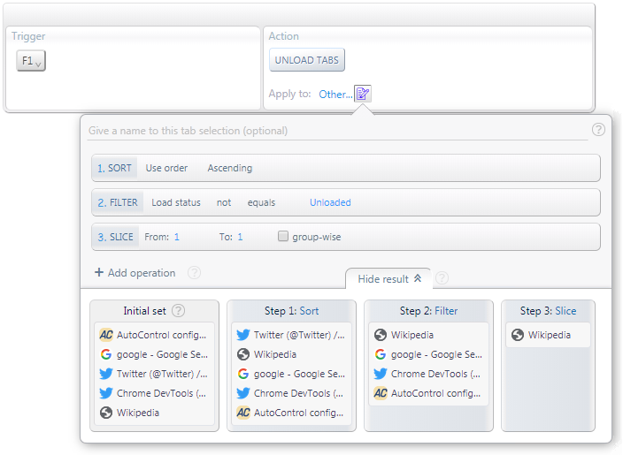
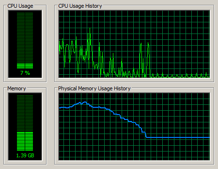

The Unload tabs action in AutoControl lets you unload the webpage from one or more tabs without closing the tabs themselves.
The effect of unloading a webpage is that all system resources used by it are released.
This is a useful feature when your computer gets slow after opening lots of tabs.
Releasing the memory taken by some of the tabs will bring the computer back to a healthier state.
Let's see how to create a shortcut for unloading one tab at a time in inverse MRU order.
That way, whenever this shortcut is triggered, the tab that hasn't been used for the longest time will be unloaded.
See the image below. The interesting part is in the Apply to select box. i.e. the target tabs for the Unload tabs action.
Click the image to see the description of each part.
Step 0/0: undefined

The result of the tab-selection above will be at most one tab. That tab will be the least recently used tab that hasn't been unloaded yet.
That's exactly the tab we want to unload when the computer starts getting slow, i.e. the one we haven't used for the longest time.
Then, if unloading one tab is not enough, we can press F1 again to unload another tab.
That way, each time we press F1, the memory usage will become lower and lower until nearly all RAM used by the browser is released, as shown below.

And not a single tab was closed in the whole process :)
 Forum
Install now from theChrome Web Store
Forum
Install now from theChrome Web Store